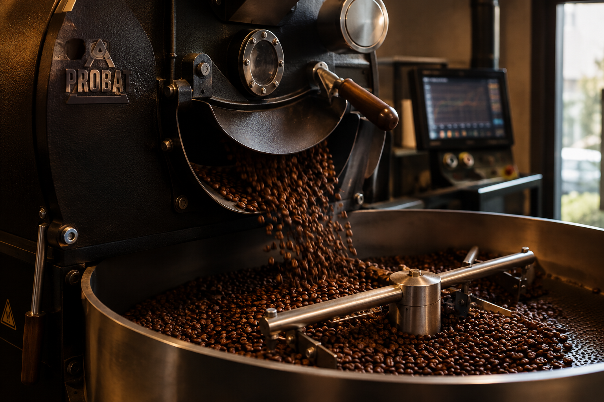

Painel da torrefação
Resumo da semana de 7 a 11 de setembro.
Café torrado
312 kg
Pedidos
47
Faturamento
R$ 28.640
Fotos da torra
Grãos de café crus antes da torra

Torrador

Prova de xícara

Pacotes de café embalados